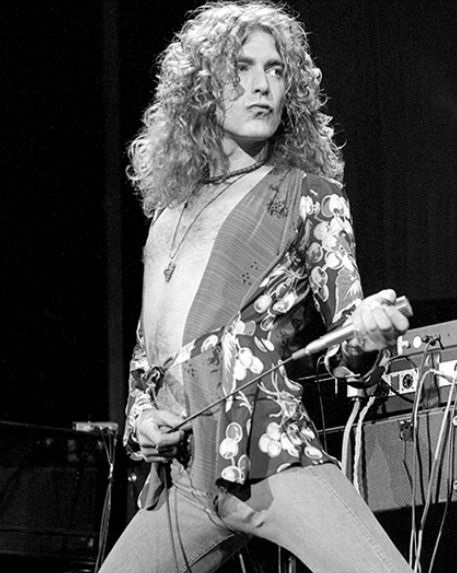
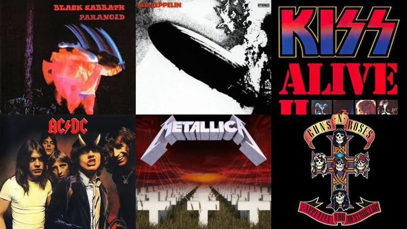

VOCALISTAS
Os vocalistas são muitas vezes os membros mais famosos e a cara da banda, quem nunca sonhou em estar encima do palco cantando sua musica preferida?
Aqui você encontra informações sobre os maiores vocalistas da historia e como eles construiram seu legado ao longo do tempo.
Assim como Brian Jhonson e Bruce Dickison, duas lendas que fizeram seus nomes na historia do ROCK.
Confira já !!ÁLBUNS
Aqui estão os álbuns das maiores bandas de rock de todos os tempos.
AC/DC, IRON MAIDEN, GUNS N ROSES, BEATLES e muito mais álbuns das grandes bandas que marcaram sua época.
Confira Já !!GUITARRISTAS
Aqui estão os álbuns das maiores bandas de rock de todos os tempos.
AC/DC, IRON MAIDEN, GUNS N ROSES, BEATLES e muito mais álbuns das grandes bandas que marcaram sua época.
Confira Já !!